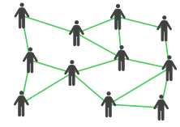
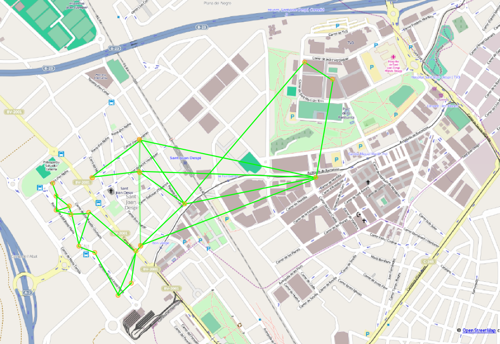
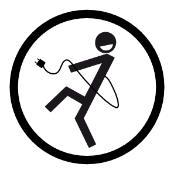

Facilitant que els veïns del Baix Llobregat es desempelleguin de les grans telecos.

GuifiBaix és un projecte d'economia social amb seu a Sant Joan Despí que té com a principal objectiu facilitar que els nostres veïns i veines es desvinculin progressivament de les grans empreses de telecomunicacions i de les seves pràctiques abusives amb els usuaris, els treballadors i la societat.
 Ho volem fer connectant els veïns i veines a la xarxa ciutadana guifi.net.
Ho volem fer connectant els veïns i veines a la xarxa ciutadana guifi.net.

guifi.net és una xarxa pública construïda pels mateixos usuaris. Cada participant construeix només el tram de xarxa que passa per casa seva i posant el seu tram a disposició dels altres, te dret a circular per la resta de trams.
 Normalment els enllacos es fan posant,
als terrats o a les balconades,
antenes Wi-Fi direccionals
apuntant-se entre sí.
Normalment els enllacos es fan posant,
als terrats o a les balconades,
antenes Wi-Fi direccionals
apuntant-se entre sí.
A les zones on ja hi ha molts usuaris, els participants han començat a posar enllaços de fibra òptica en comptes dels Wi-Fi.
 A data d'avui guifi.net té més de 21.000 nodes actius.
Està molt desplegada per zones com ara
Osona (on va nèixer), El Maresme, El Penedés, Castellò...
L'actor comú són els voluntaris però sovint entren
en sinèrgies positives amb empreses i ajuntaments que potencien la xarxa.
A data d'avui guifi.net té més de 21.000 nodes actius.
Està molt desplegada per zones com ara
Osona (on va nèixer), El Maresme, El Penedés, Castellò...
L'actor comú són els voluntaris però sovint entren
en sinèrgies positives amb empreses i ajuntaments que potencien la xarxa.
 Al nostre entorn,
cal destacar el bon desplegament que s'ha fet a Torrelles
entre un parell d'empreses i l'Ajuntament.
A Sant Feliu l'Ajuntament va posar dos nodes grans i
ha facilitat antenes secundàries a unes 50 famílies.
No dona gaire de sí perquè son una illa sense connectar
a la resta de la xarxa i només comparteixen un ADSL.
Al nostre entorn,
cal destacar el bon desplegament que s'ha fet a Torrelles
entre un parell d'empreses i l'Ajuntament.
A Sant Feliu l'Ajuntament va posar dos nodes grans i
ha facilitat antenes secundàries a unes 50 famílies.
No dona gaire de sí perquè son una illa sense connectar
a la resta de la xarxa i només comparteixen un ADSL.
 A Sant Joan, fa anys que la AAVV de l'Eixample va fer un desplegament al barri on una desena de famílies i la pròpia associació comparteixen 2 ADSL's. L'any passat vam deixar de ser una illa connectant-nos a la resta de Guifi.net. Ara, amb GuifiBaix, estem estenent la xarxa al centre, Les Planes i TV3.
Els participants de la xarxa comparteixen recursos i serveis. El més popular és la connectivitat a internet (compartir els ADSL's), però també hi ha d'altres serveis interns de la xarxa que van a altes velocitats, perque no han de sortir per cap ADSL.
Alguns exemples són la telefonia IP, l'enmagatzament i compartició de fitxers al núvol, els serveis de video-conferència, les descàrregues compartides, emisores de ràdio i televisió online, e-mail, hosting web, intranets, servidors de noms, servidors de jocs online...
 GuifiBaix és una iniciativa nascuda de la campanya Desconnexió de l'IBEX35 del 15M de Sant Joan Despí. L'objectiu de la campanya és posar a l'abast dels ciutadans la informació i els mitjans per deixar d'engreixar a les grans empreses oligopolístiques que controlen l'estat. Banca, electricitat, medis, assegurances, alimentació, informàtica...
En el cas de Guifi.net per les telecomunicacions, vam veure que no era una alternativa tan senzilla de fer el salt pel public en general, com ara SomEnergia per la electricitat, i que calia un actor local, com n'hi ha a d'altres indrets on Guifi.net funciona bé. que en fes les instaŀlacions, el manteniment, i reduís la complexitat de tot plegat.
GuifiBaix facilita que els participants de guifi.net que no tinguin coneixements tècnics per muntar un node també puguin incorporar-se a la xarxa. Ofereix a les comunitats de veïns solucions a punt per fer funcionar. Manté i coordina la xarxa de la zona, repartint el fluxe de dades, i oferint serveis convenients als usuaris.
Per garantir unes condicions justes als treballadors, ens organitzem sota principis cooperatius i d'economia social. Els treballadors tenim el control de les nostres condicions de treball.
Per garantir un tracte just als usuaris, el primer és donar-los llibertat. No volem usuaris lligats. La infraestructura que instaŀlem pertany als usuaris, està basada en estàndards oberts y està ben documentada. Si ens tornem malèvols, els usuaris tenen dret a cercar una fórmula empresarial o a base de voluntaris que ens substitueixi. A més, promovem l'auto-organització i formació d'usuaris perque puguin pendre decissions al voltant de l'evolució de la xarxa.
GuifiBaix està, de moment, a una incubadora de projectes d'economia social, anomenada AT2, i encara no té forma jurídica pròpia. Durant el periode d'incubació és AT2 qui factura i fa els contractes amb treballadors i usuaris. La incubadora ens dòna temps, fins a mitjans del 2014, per avaluar com funciona el projecte abans de decidir quina és la forma jurídica més adient i de quina manera s'integren els usuaris, fent-los socis o muntant una associació paraŀlela, per exemple.
Es clar que sí. De fet, les instal·lacions que fa GuifiBaix queden llestes per connectar i navegar.
És important entendre, però, que guifi.net no és Internet en sí mateix, i que GuifiBaix no és el proveidor d'aquest Internet. Són els mateixos participants de la xarxa que comparteixen, mitjançant guifi.net, el cabdal sobrant dels ADSL's i fibres òptiques de que disposen.
Per això, GuifiBaix recomana a les comunitats de veïns de sis o més vivendes que mantinguin una o dos connexions ADSL compartides per expandir el cabdal disponible a la xarxa. Els veïns d'un edifici, surten per aquest ADSL amb preferència i si l'ADSL es satura, el tràfic automàticament es redirigeix per l'antena cap a un altre edifici amb capacitat sobrant.
De moment, depenem encara d'aquests ADSL's. En tot cas, és una dependència menor i un estalvi sobre la situació de que cada domicili tingui una línia.
Qualsevol sortida a internet conectada es suma. Si ens estenem a zones amb fibra òptica, ho sumem i podrem anar prescindint d'ADSL's. La situació ideal a la llarga seria trobar un proveidor de fibra òptica extern que ens ofereixi cabdal suficient a preu de majorista.
Es clar que sí. Fins i tot pots conservar el número.
Cal fer servir 'telefonia IP'. Ve a ser l'invers d'un ADSL: en comptes de passar Internet pel cable del telèfon, passem el telèfon pel cable d'Internet.
Per poder fer-ho calen dues coses: Un equip per trucar y contractar un operador de Telefonia IP. GuifiBaix us facilitarà, per la vostra comoditat, diferents les ofertes de les dues coses i les oferirà configurades i llestes per funcionar. Els usuaris teniu la llibertat de buscar-vos les vostres pròpies opcions.
L'equip per trucar pot ser:
L'operador de telefonia IP és necessari per fer o rebre trucades fora de la xarxa guifi.net. Són els que fan servir els locutoris, i fan uns preus molt barats.
Només per la vostra comoditat, GuifiBaix us plantejarà paquets d'aparells i tarifes amb operadors adequats pel vostre cas i llestos per funcionar. Ho oferim només per la vostra conveniencia, els participants de la xarxa teniu la llibertat de buscar-vos pel vostre compte on comprar els aparells i a qui contractar la telefonia IP.
Un altre detall beneficiós és que els telèfons IP permeten fer trucades gratis directes entre usuaris de guifi.net sense passar per cap operador.
A Sant Joan Despí som pioners pel sistema que fem servir a guifi.net. En comptes de fer servir nodes centrals als que apunten els usuaris finals, cada edifici afegit és un posible camí per les dades. Això fa sigui molt fàcil donar cobertura a noves arees i els camins alternatius fan que la xarxa sigui més flexible i tolerant a fallades i a saturació.
La xarxa al poble va començar a la zona de l'Eixample, impulsada per la AAVV del barri, amb una xarxa que donava cobertura a 10 families saltant de balconada a balconada i que compartien 2 ADSL's. Entre els anys 2011 i 2013 hem expandit la xarxa al barri centre i properament a arribarem a Les Planes i TV3.
La xarxa de Sant Joan ha estat, fins fa poc, una illa i no estava connectada a la resta de guifi.net. Des del 2012 esta connectada mitjantçant un node a Santa Coloma de Cervellò.
GuifiBaix fa principalment instaŀlacions a comunitats de veïns.
Normalment es fa el següent:
Opcionalment els veïns poden demanar pagant-ho ells:
GuifiBaix asumeix sense cap pagament però tampoc garantia les tasques de mantenir i administrar els elements comuns de la xarxa, que són bàsicament les antenes.
A les comunitats de veïns que paguin la quota trimestral, els hi farem també el manteniment de la xarxa interna de l'edifici i la resolució d'incidències de conectivitat. A més tindran accés als serveis de conveniència que anem desenvolupant: descàrregues compartides, streaming de vídeo, serveis tipus nuvol, intranets, servidors de jocs online, cursos...
Els equips que instalem a un edifici resten en propietat de la comunitat de veïns.
Llevat de les degudes garanties o d'una mala manipulació per part nostra, els dispositius són responsabilitat dels veïns, per exemple, en cas de robatori o desperfectes.
Tot i que els equips siguin propietat i responsabilitat de la comunitat, GuifiBaix es reserva el dret d'accés tant físic com telemàtic als elements de xarxa comunitaris com ara l'antena i els dispositius de distribució (routers, switches...) per poder fer feines de manteniment.
Si en un moment donat no feu servir més els equips, ens agradaria recomprar-los, a un preu adient a la seva amortització i estat. GuifiBaix en cap cas està obligat a la recompra però ho volem potenciar amb l'objectiu de reduir l'escombreria electrònica si els equips es poguèssin reutilitzar a d'altres instaŀlacions.
La perillositat de les ones electromagnètiques no ionitzants (llum visible, ràdio, televisió, telefonia mòbil, wifi, wimax...) és un tema científicament controvertit. És complicat fer un estudi complert a llarg termini aillant altres variables.
Sí que hi ha consens en que, en cas de que sigui perillós, el perill dependrà de coses com ara la distància i el temps d'exposició, la potència rebuda, i la freqüència de les ones. Exposicións prolongades a curta distància i de molta alta potència (com ara radars) sí que han tingut efectes nocius demostrats.
Tenint en compte això, cal dir que, les emisions de les nostres antenes estan ordres de magnitud per sota en potència de les emisions que pot fer, per exemple, un mòbil, que a més, normalment portem pegat al cos.
Per que et facis una idea: Les grans antenes de telefonia mòbil que es posen als terrats tènen potència per creuar murs i donar-te cobertura, per exemple, en un sòtan, estant l'antena dos i tres carrers enllà. És més, els mòbils que tenim a les butxaques contesten emetent amb prou potència per fer el camí de tornada.
Les nostres antenes emeteixen tan poca potència que necessiten tenir visió directa entre elles. A la que poses un obstacle entremig, un arbre o una paret, la senyal desapareix.
Les antenes de guifi.net que més potència tenen són les que conecten poblacions entre sí. El mateix tècnic de la campanya contra les antenes de telefonia a Matarò, va certificar com a no riscoses les emissions d'una d'aquestes antenes 'grans'.
El servei de telecomunicacions es considera servei bàsic. La instaŀlació només requereix de notificació a la comunitat, no d'aprovació i els costos anirien a càrrec del beneficiari.
Malgrat això, és molt convenient, tot i que no pas necessari, vehicular-ho per la comunitat de veïns, de cara a gestionar-ho i fer els pagaments comunitaris, i per això sí que cal aprovació. També fora bo convidar als altres veins a compartir els costos comuns.
També és possible que, per l'especificitat de l'edifici, l'instaŀlació impliqui actuacions sobre els comuns de la comunitat que també requereixin d'aprovació.
La Fundació guifi.net ho està i això cobreix les activitats que, de moment, fem com a GuifiBaix. Ens registrarem si en cap moment comencem a fer alguna activitat que la Fundacio no pogués cobrir.
La llei estableix un seguit de bandes de freqüència reservades per comunicar antenes WiFi entre elles, sense que calgui cap licència administrativa. Els equips que fem servir vénen limitats de fàbrica per fer servir només aquestes freqüències i els fem servir bastant per sota de la màxima potència permesa que també està limitada de fàbrica.
La llei permet que les persones comparteixin l'ADSL en mode de auto-prestació sense cap tipus d'autorització administrativa (Art. 6.2 de la Ley 32/2003 General de Telecomunicaciones). Segons la Comisió Nacional de Telecomunicacions, perquè sigui auto-prestació, ha de estar encaminat a cobrir les necessitats pròpies de comunicació, no ha d'haver ànim de lucre i estar limitat als usuaris que en formen part.
{kind=link}
{kind=link}